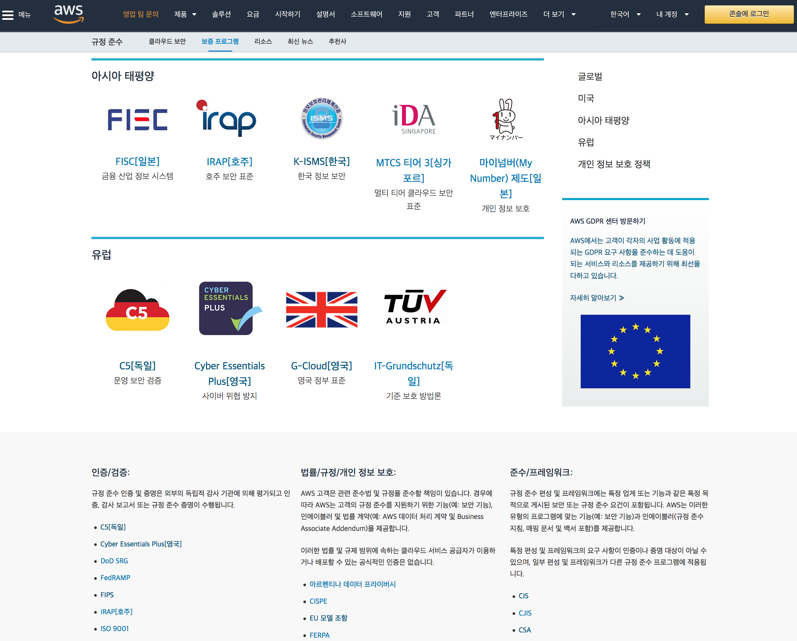
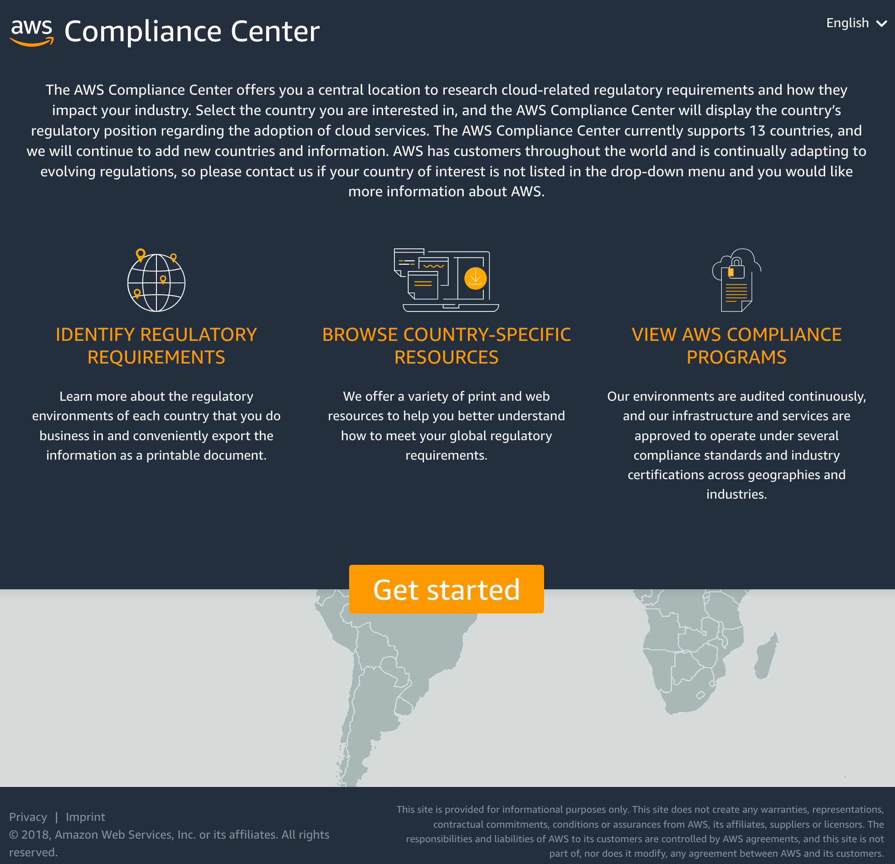
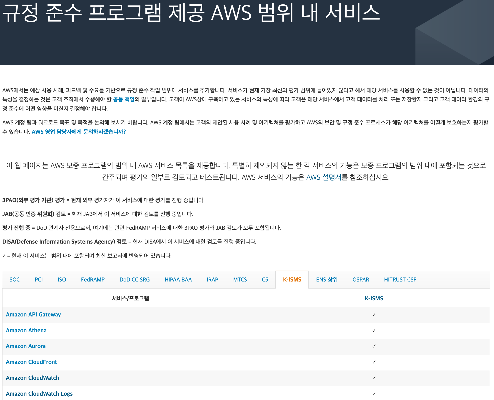
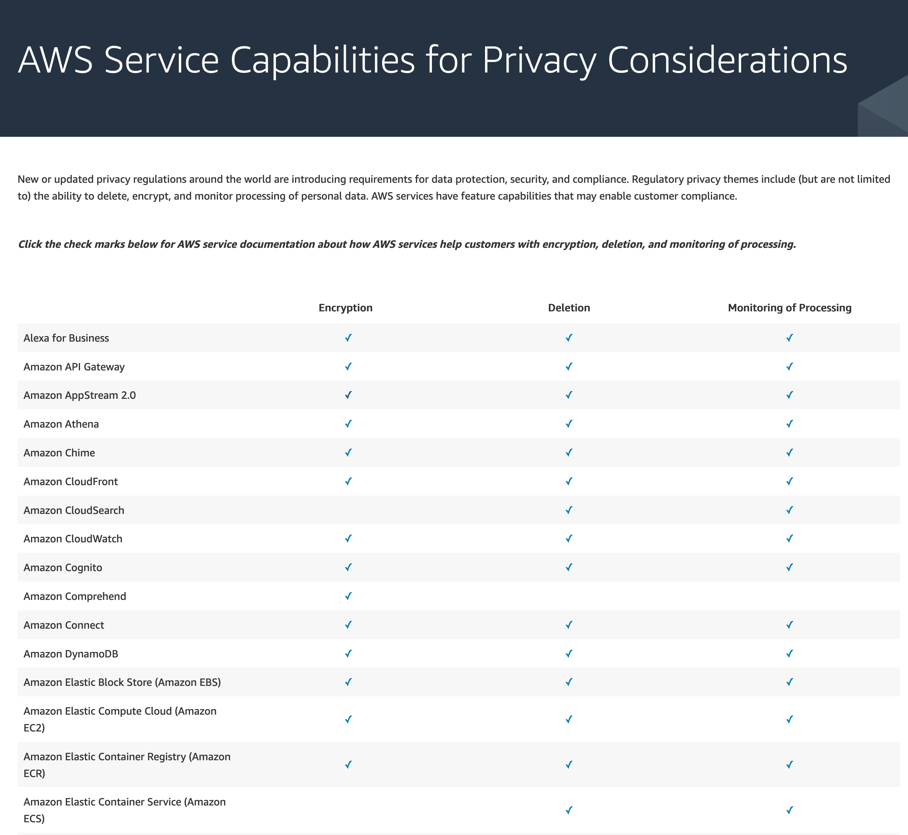
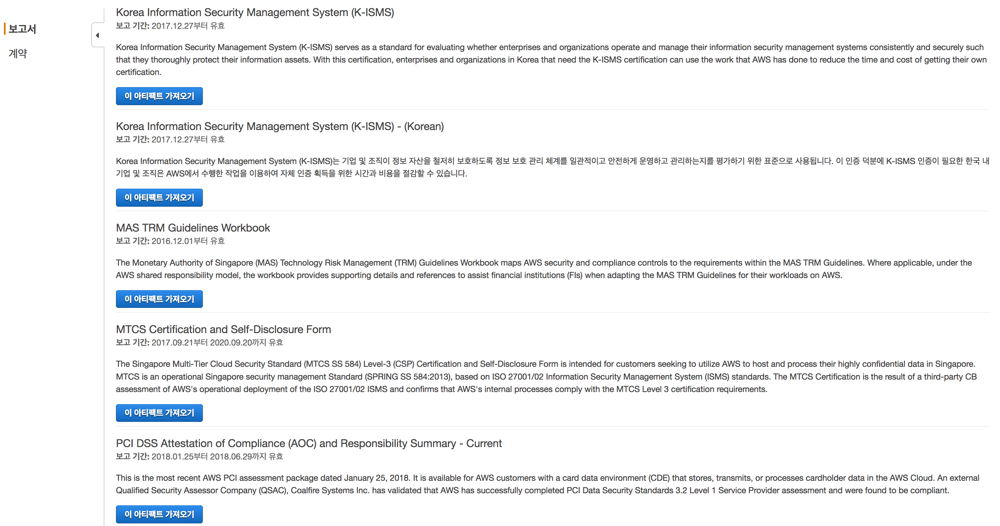

컴플라이언스 관련 정보
AWS 클라우드를 이용하는데 있어서, 고객들이 주지해야 될 국내외 규제준수, 컴플라이언스 백서, 온라인 강의, SLA 및 AWS의 각종 정책, 관련 블로그나 동영상 등에 대한 내용을 담고 있는 싸이트들을 안내합니다.
아래 모든 내용은 한국 고객의 편의를 위하여 참고할 수 있는 내용으로, 법적인 효력을 지니지는 않습니다. 공식적인 내용은 https://aws.amazon.com/ko/compliance/ 를 참조하십시오.
AWS 규정준수 프로그램
AWS 규정 준수 프로그램 – AWS가 클라우드 사업자로서 획득하거나 준수하고 있는 글로벌과 지역별 규정 준수내역에 대한 자세한 설명을 제공하고 있습니다. 한국의 K-ISMS에 대한 내용도 함께 제공됩니다.

AWS Compliance Center
AWS Compliance Center - 미국, 영국, 프랑스, 독일, 이탈리아, 스페인, 스위스, 덴마크, 스웨덴, 호주, 홍콩, 인도, 한국, 싱가폴 등 글로벌 각국의 규제에 대한 AWS 내, 외부 자료들과 정보들을 모아 놓은 싸이트입니다.

규정 준수 프로그램 제공 AWS 범위 내 서비스
규정 준수 프로그램 제공 AWS 범위 내 서비스 - K-ISMS를 비롯하여 AWS 각 서비스 별로 글로벌 및 국가별 법규, 규제, 스탠다드 등에 대한 준수/지원 여부를 확인할 수 있는 사이트입니다.

AWS Service Capabilities for Privacy Considerations
AWS Service Capabilities for Privacy Considerations – AWS가 제공하는 각종 서비스 별로 개인정보 요건인 암호화, 삭제, 모니터링 관점에서 각각 기능들의 링크들을 정리한 싸이트입니다. 목록에 있는 체크 아이콘을 클릭하면 서비스의 해당 기능 설명 페이지로 이동합니다.

AWS Artifact
AWS Artifact – AWS 규정 준수 프로그램에서 제공하고 있는 준수 내역 중 엄선된 보고서와 인증서를 AWS 콘솔 상에서 온 디맨드 방식으로 다운로드 할 수 있는 서비스로서, ISO 27001, ISO 27017, ISO 27018, ISO 9001, PCI-DSS, SOC1, SOC2, SOC3, FedRAMP 및 한국의 K-ISMS에 대한 인증서도 받아 볼 수 있습니다. 단, 이용을 하기 전에 Artifact NDA와 BAA에 대한 온라인 동의과정이 필요합니다.

AWS Audit Manager
AWS Audit Manager는 AWS 사용량을 지속적으로 감사하여 위험과 규정 및 산업 표준의 준수를 평가하는 방법을 간소화하는 데 도움이 됩니다. Audit Manager는 증거 수집을 자동화하여 감사에 자주 발생하는 "모든 실무 작업"의 수동 작업을 줄이고 비즈니스가 성장함에 따라 클라우드에서 감사 기능을 확장할 수 있습니다. Audit Manager를 사용하면 제어라고도 하는 정책, 절차 및 활동이 효과적으로 작동하는지 쉽게 평가할 수 있습니다. 감사 시간이 되면 AWS Audit Manager를 통해 통제 항목에 대한 이해관계자의 검토를 관리함으로써 수동 작업을 대폭 줄이면서 감사 준비 보고서를 작성할 수 있습니다. Audit Manager를 이용하는데 참고할 만한 유용한 내용들은 아래와 같습니다.
Bookmark
- AWS Audit Manager의 보안
- 외부백서 - Effective compliance and audit management using Amazon Web Services (AWS) Audit Manager
- GIT - Custom Audit Manager Controls and Frameworks
- Blog - AWS Audit Manager Simplifies Audit Preparation
- Blog - Prepare for Oracle license audits in AWS using AWS Audit Manager and AWS License Manager
- Blog - Integrate across the Three Lines Model (Part 1): Build a custom automation of AWS Audit Manager with AWS Security Hub
- Blog - Streamlining evidence collection with AWS Audit Manager
Compliance Quickstarts
주요 컴플라이언스를 준수하는데 참고할 수 있는 모범 보안 아키텍쳐를 안내하고 있는 퀵스타트 링크입니다.
- AWS의 PCI DSS에 대해 표준화된 아키텍처
- PCI DSS and AWS Foundational Security Best Practices on the AWS Cloud
- AWS의 HIPAA에 대해 표준화된 아키텍처
- AWS 기반 HIPAA 참조 아키텍처
- Cohesive Networks VNS3 on AWS - VPC상에 VNS3 Overlay 네트워크를 구성하여 HIPAA 암호화 규정 준수를 지원
- AWS에서 NIST 기반 보증 프레임워크에 대해 표준화된 아키텍처
- AWS에서 NIST 고위험 제어를 위해 표준화된 아키텍처
- CIS AWS Foundations Benchmark
- 의료용 AWS 기반 Tableau Server - HIPAA 워크로드 용 BI 솔루션인 Tableau환경 구성
- UK-OFFICIAL on AWS용 표준 아카텍처 - NCSC와 CIS 보안 규정을 준수하는 표준 환경을 구성
- IRAP PROTECTED on AWS
- Reference Architecture for HITRUST on AWS
- ISMS-P on AWS - K-ISMS-P
- Blog - Audit companion for the AWS PCI DSS Quick Start
- Fintech Blueprint on the AWS Cloud
- AWS 기반 SWIFT Client Connectivity - SWIFT 네트워크 연결을 위한 표준화된 환경
한국 정보보호 관리체계(K-ISMS-P)
K-ISMS-P에 대한 안내 페이지.
- K-ISMS 인증
- KISA K-ISMS-P AWS 서울 리전 인증서 확인 페이지
- 규정 준수 프로그램 제공 AWS 범위 내 서비스
- Operational Best Practices for K-ISMS
- Blog - AWS is the first global cloud service provider to comply with the new K-ISMS-P standard
EU GDPR
2018년 5월 25일 시행되는 EU GDPR 관련 정보를 제공하는 주요 링크들입니다.
- AWS GDPR 센터- GDPR에 대한 상세 내용을 담고 있는 백서, FaQ, AWS가 지원하는 부분 등에 대한 안내
- 정부 GDPR 안내센터- 정부가 GDPR에 대한 상세 내용을 안내하고 있는 싸이트로서, GDPR 한글 번역본과, 행안부와 KISA에서 발간한 우리 나라 기업을 위한 1차 가이드라인 등을 제공
- AWS GDPR Data Processing Addendum - AWS 서비스 약관에 포함된 AWS GDPR DPA 본문(2018년 5월 25일 발효)
- SUPPLEMENTARY ADDENDUM TO AWS GDPR DATA PROCESSING ADDENDUM
- 프라이버시 고려 사항에 대한 AWS 서비스 기능
- Brexit 및 AWS에 대해 알아야할 모든 것
- 백서 - Navigating GDPR Compliance on AWS
- Blog - All AWS Services GDPR ready
- Blog - AWS GDPR Data Processing Addendum – Now Part of Service Terms
- Blog - Handling data erasure requests in your data lake with Amazon S3 Find and Forget
- Blog - AWS and EU data transfers: strengthened commitments to protect customer data
- Blog - New Standard Contractual Clauses now part of the AWS GDPR Data Processing Addendum for customers
- Blog - How UK public sector customers can implement NCSC security principles to protect data transfers to AWS
기타 도움될 만한 링크
- AWS 이용계약
- AWS 서비스 약관
- AWS 사이트 약관
- AWS 개인정보 처리방침
- 데이터 프라이버시 - 고객 데이터에 대한 최종적인 소유권과 통제, 그리고 AWS가 이 부분에서 개입하는 역할에 대한 잘 정리된 싸이트
- AWS 이용목적 제한방침
- Amazon 정보 요청 - AWS가 법적 구속력을 갖춘 정보 요청에 대한 지원 건수를 반기별로 집계하여 공개하는 싸이트
- 하위 프로세서 및 계열 운영 엔터티
- AWS 외주업체 액세스 - 고객이 AWS에 업로드한 개인 데이터에 액세스할 수 있도록 AWS가 승인하는 외주업체 목록
- AWS Service Level Agreements - AWS가 SLA기준을 제공하는 서비스들에 대한 안내
- HIPAA Eligible Services Reference - HIPAA Eligible한 AWS 서비스 목록(2019. Jan. 24일 기준)
- PCI - Penetration Testing Guidance - v.1.1, 2017년 9월
- 동영상 [AWS Summit Seoul 2018] - 비즈니스 혁신 가속화와 효과적 규정 준수를 위한 AWS ISMS 소개
- California Consumer Privacy Act (CCPA)
- 외부 링크 - 데이터 3법 - 2020년 1월 9일 국회 통과된 데이터 3법 개정안에 대한 종합적인 안내
- Compliance 전문 파트너 - SAK(한국 정보 보호 인식) - K-ISMS-P, GDPR, CSP 안전성평가 등 지원
- Blog - AWS and EU data transfers: strengthened commitments to protect customer data
- Blog - AWS achieves ISO/IEC 27701:2019 certification
- Blog - 17 additional AWS services authorized for DoD workloads in the AWS GovCloud Regions
- Blog - Optimizing cloud governance on AWS: Integrating the NIST Cybersecurity Framework, AWS Cloud Adoption Framework, and AWS Well-Architected
- Blog - AWS achieves GSMA security certification for US East (Ohio) Region
- Blog - 137 AWS services achieve HITRUST certification
- Blog - New AWS workbook for New Zealand financial services customers
- Blog - AWS attained MTCS Level 3 certification under the new SS584:2020 standard
- Blog - Why and how customers achieve FIPS-Compliance for .NET Workloads on AWS
- Blog - Healthcare Transparency in Coverage Rule (TCR) – Cost-effectively Hosting Machine-Readable Files On AWS
- Blog - HIPAA and HITRUST on AWS
- Blog - Automating the Installation Qualification (IQ) Step to Expedite GxP Compliance
- Blog - AWS GDPR Data Processing Addendum – Now Part of Service Terms
- Blog - Addressing Data Residency with AWS
- Blog - Applying the AWS Shared Responsibility Model to your GxP Solution
- Blog - Improving Healthcare Education and Simulation with AWS
- Blog - Building a foundation for GxP regulated IoT workloads on AWS
- Blog - AWS HITRUST Shared Responsibility Matrix version 1.2 now available
- Blog - AWS and the UK rules on operational resilience and outsourcing
- Blog - AWS HITRUST Inheritance: What customers should know
- Blog - Change Management for Life Sciences
- Blog - GxP Continuous Compliance on AWS
Remarks
- 이 사이트의 모든 내용은 바뀌거나 수정될 수 있습니다.
- 위 모든 내용은 한국 고객의 편의를 위하여 참고할 수 있는 내용으로, 법적인 효력을 지니지는 않습니다. 공식적인 내용은 https://aws.amazon.com/ko/compliance/ 를 참조하십시오.
- 제공되는 내용에 이견이 있거나 잘못된 링크를 발견하시면, 관리자(gisunlim@amazon.com)에게 메일을 주시면 대단히 감사하겠습니다.
개인 정보 보호 정책 | 사이트 이용 약관 | © 2020, Amazon Web Services, Inc. 또는 자회사. All rights reserved.